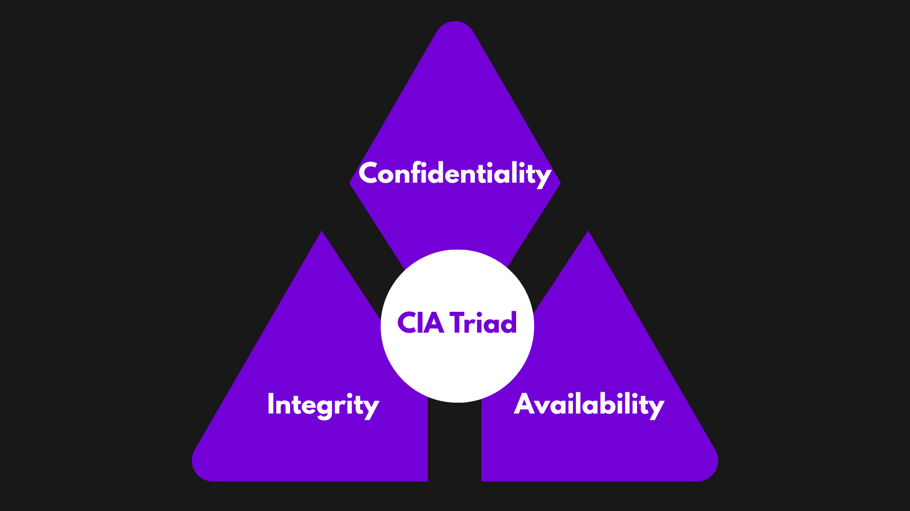

Information Security

Any meaningful data is information. Information is crucial. Some information is vital for works and some for personal matters. Information needs to be protected no matter what. Information has also been shaped into digital form. This makes information security even more critical.
Information Security is the protection of information from any unauthorized or unwanted access, publicity, modification, destruction and more. Basically, we may not want the information we possess to be known by anyone and to be modified or destroyed. Information Security involves three main principles:
- Confidentiality: It ensures that the data is kept secret and revealed to only those intended to. It keeps data secure. Example, a secret policy formed by an organization should be known only to some of the authorized members of the organization and not anyone else. Confidentiality is achieved to prevent data leaks.
- Integrity: It ensures the consistency of data. The data is not changed or modified during the transmission. For example, if the organization wants to communicate with its branches regarding the secret policy, the message mustn’t be altered otherwise it won’t provide the actual intended message. Integrity is achieved to ensure the authenticity of data.
- Availability: It ensures the consistency of data. The data is not changed or modified during the transmission. For example, if the organization wants to communicate with its branches regarding the secret policy, the message mustn’t be altered otherwise it won’t provide the actual intended message. Integrity is achieved to ensure the authenticity of data.

Difference between Cybersecurity and Information Security
| Cybersecurity | Information Security |
|---|---|
| It involves security in digital or IT field. | It involves all forms of security of information including IT or non-IT. |
| The main objective of cyber security is to protect the system, network and data from cyber threats. | The main objective of information security is confidentiality, to maintain availability integrity of the information. |
| The cyber security scope is within IoT, i.e. electronic devices and their hardware, software, etc. | The Information Security scope is broader as it includes IoT and other mediums of information like verbal, paper, etc. |
Why is Information Security important?
- It prevents data breach (leakage of data).
- It protects privacy.
- It protects reputation and financial losses.
- For businesses, it ensures smooth business operations.